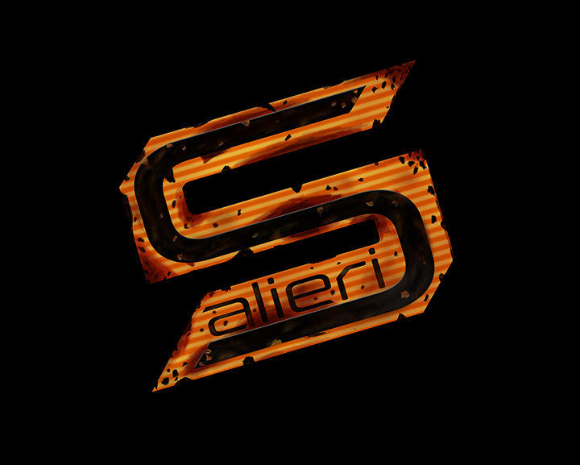
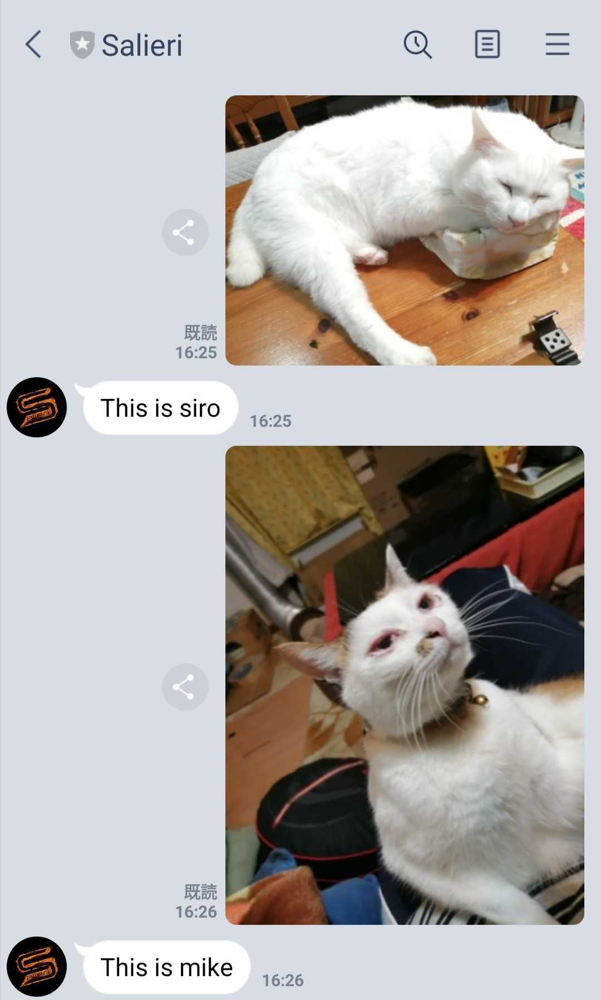
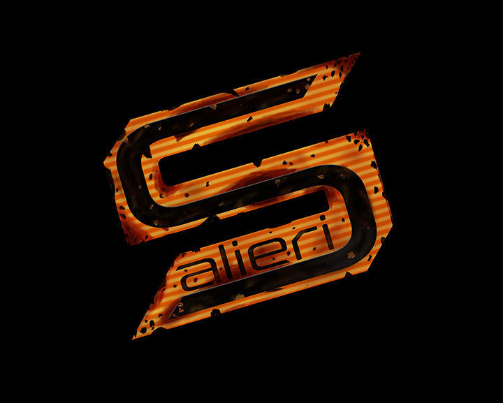
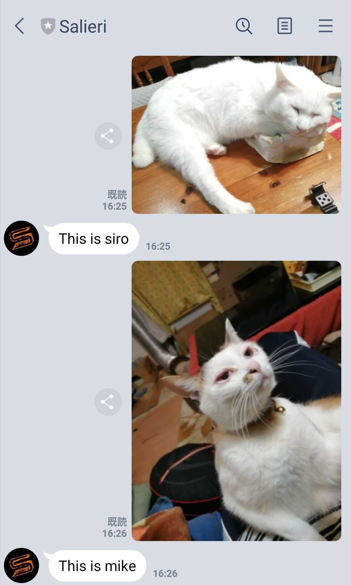

RYUNOSUKE IKEDA
Portfolio Site

・画像分類AI（CNN）を搭載したLINEボット"Salieri"の開発
自宅の三毛猫と白猫を見分ける人工知能を実装
・画像分類AIを用いたWebアプリの開発
パーソナルカラー診断と顔の輪郭診断を画像認識で行う。
技育展発表作品、チームで開発を行った。
自分はサーバー、AIを担当
appのURL:https://pmup.herokuapp.com/
初回起動には時間がかかります
Portfolio Site

自宅の三毛猫と白猫を見分ける人工知能を実装
パーソナルカラー診断と顔の輪郭診断を画像認識で行う。
技育展発表作品、チームで開発を行った。
自分はサーバー、AIを担当
appのURL:https://pmup.herokuapp.com/
初回起動には時間がかかります